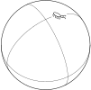
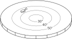
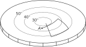
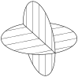
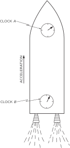
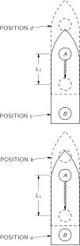

42. Искривленное пространство
42–1 Искривленные двумерные пространства#
Согласно Ньютону, все тела притягиваются друг к другу с силой, обратно пропорциональной квадрату расстояния между ними, а тела реагируют на силы ускорениями, пропорциональными этим силам. Это закон всемирного тяготения и законы движения Ньютона. Как вы знаете, они объясняют движение мячей, планет, спутников, галактик и так далее.
Эйнштейн предложил иную интерпретацию закона всемирного тяготения. Согласно его теории, пространство и время — которые необходимо рассматривать совместно как пространство-время — искривляются вблизи массивных тел. Именно стремление объектов двигаться по «прямым линиям» в этом искривленном пространстве-времени определяет характер их движения. Это сложная идея — очень сложная. Именно её мы и хотим объяснить в этой главе.
Наш предмет состоит из трех частей. Одна из них касается эффектов гравитации. Другая затрагивает идеи пространства-времени, которые мы уже изучили. Третья связана с понятием искривленного пространства-времени. Сначала мы упростим нашу задачу, не учитывая гравитацию и исключив время — обсудим только искривленное пространство. Позже мы поговорим об остальных частях, но сейчас сосредоточимся на идее искривленного пространства: что под этим подразумевается и, в частности, что означает искривленное пространство в данном приложении теории Эйнштейна. Даже это оказывается довольно сложным в трехмерном случае. Поэтому сначала мы еще больше упростим задачу и поговорим о том, что означают слова «искривленное пространство» в двух измерениях.
Чтобы понять идею искривленного пространства в двух измерениях, необходимо по-настоящему осознать ограниченность точки зрения существа, живущего в таком пространстве. Предположим, мы представим себе слепого жука, живущего на плоскости, как показано на рис. 42–1. Он может перемещаться только по плоскости и не имеет возможности узнать, что существует какой-либо способ обнаружить «внешний мир». (У него нет вашего воображения.) Мы, конечно, будем рассуждать по аналогии. Мы живем в трехмерном мире и не можем вообразить, как можно выйти из нашего трехмерного мира в новом направлении; поэтому нам приходится обдумывать это по аналогии. Это похоже на то, как если бы мы были жуками, живущими на плоскости, а пространство существовало в другом направлении. Вот почему мы сначала будем работать с примером жука, помня, что он должен жить на своей поверхности и не может выбраться за ее пределы.

В качестве другого примера жука, живущего в двух измерениях, представим себе того, кто живет на сфере. Мы полагаем, что он может перемещаться по поверхности сферы, как на рис. 42–2, но не может смотреть «вверх», «вниз» или «наружу».

Теперь мы хотим рассмотреть еще один, третий, вид существа. Он тоже жук, как и предыдущие, и тоже живет на плоскости, как наш первый жук, но на этот раз плоскость необычна. Температура в разных ее точках различна. Кроме того, сам жук и все линейки, которыми он пользуется, сделаны из одного и того же материала, который расширяется при нагревании. Всякий раз, когда он прикладывает линейку в каком-то месте, чтобы что-то измерить, линейка немедленно расширяется до длины, соответствующей температуре в этом месте. Куда бы он ни поместил какой-либо объект — себя, линейку, треугольник или что угодно другое, — предмет растягивается из-за теплового расширения. Все в горячих местах длиннее, чем в холодных, причем коэффициент расширения у всех тел одинаков. Мы будем называть дом нашего третьего жука «горячей пластиной», хотя мы особенно хотим представить себе особый вид такой пластины, которая холодная в центре и становится горячее по мере удаления к краям (рис. 42–3).
Теперь представим, что наши жуки начинают изучать геометрию. Хотя мы воображаем их слепыми, так что они не видят никакого «внешнего» мира, они многое могут сделать своими лапками и усиками. Они могут проводить линии, изготавливать линейки и откладывать длины. Сначала предположим, что они начинают с простейшего геометрического понятия. Они учатся проводить прямую линию, определяемую как кратчайший путь между двумя точками. Наш первый жук — см. рис. 42–4 — учится проводить очень хорошие линии. Но что происходит с жуком на сфере? Он проводит свою прямую линию как кратчайшее расстояние — для него — между двумя точками, как показано на рис. 42–5 . Нам она может показаться кривой, но у него нет способа покинуть сферу и обнаружить, что «на самом деле» существует более короткая линия. Он просто знает, что, какой бы другой путь в своем мире он ни выбрал, он всегда будет длиннее его прямой линии. Поэтому мы позволим ему считать своей прямой линией кратчайшую дугу между двумя точками. (Это, разумеется, дуга большого круга.)
Наконец, наш третий жук — тот, что на рис. 42–3, — также будет чертить «прямые линии», которые нам кажутся кривыми. Например, кратчайшее расстояние между A и B на рис. 42–6 будет проходить по такой кривой, как показано на рисунке. Почему? Потому что, когда его линия искривляется в сторону более нагретых участков его горячей пластины, линейки становятся длиннее (с нашей всеведущей точки зрения), и требуется меньше «измерительных стержней», уложенных в ряд, чтобы добраться от A до B. Поэтому для него эта линия прямая — у него нет способа узнать, что где-то в странном трехмерном мире может существовать кто-то, кто назвал бы другую линию «прямой».
Мы полагаем, теперь вам понятно, что в дальнейшем весь анализ всегда будет проводиться с точки зрения существ, находящихся на конкретных поверхностях, а не с нашей точки зрения. Учитывая это, давайте посмотрим, как выглядят остальные их геометрии. Предположим, что все жуки научились проводить две пересекающиеся под прямым углом линии. (Вы можете сами догадаться, как они могли бы это сделать.) Тогда наш первый жук (тот, что на нормальной плоскости) обнаруживает интересный факт. Если он начинает из точки A и проводит линию длиной 100 дюймов, затем проводит линию под прямым углом длиной 100 дюймов, затем делает ещё один прямой угол и проходит ещё 100 дюймов, а затем делает третий прямой угол и проводит четвёртую линию длиной 100 дюймов, он возвращается прямо в начальную точку, как показано на рис. 42–7 (а). Это свойство его мира — один из фактов его «геометрии».
Затем он обнаруживает еще одну интересную вещь. Если построить треугольник — фигуру с тремя прямыми сторонами, — то сумма его углов будет равна 180^\circ, то есть сумме двух прямых углов. См. рис. 42–7 (b).
Затем он изобретает окружность. Что такое окружность? Окружность строится так: вы движетесь по прямым линиям во многих различных направлениях из одной точки и отмечаете множество точек, которые находятся на одинаковом расстоянии от этой точки. См. рис. 42–7 (c). (Мы должны быть осторожны в том, как определяем эти вещи, потому что мы должны быть в состоянии создать аналоги для других.) Конечно, это эквивалентно кривой, которую можно начертить, вращая линейку вокруг точки. Как бы то ни было, наш жук учится строить окружности. Однажды он задумывается об измерении расстояния вдоль окружности. Он измеряет несколько окружностей и обнаруживает изящную закономерность: расстояние вдоль окружности всегда равно одному и тому же числу, умноженному на радиус r (который, конечно, является расстоянием от центра до самой кривой). Отношение длины окружности к радиусу всегда одно и то же — приблизительно 6.283 — независимо от размера окружности.
Теперь посмотрим, что другие наши жуки выяснили о своей геометрии. Во-первых, что произойдет с жуком на сфере, если он попытается построить «квадрат»? Если он будет следовать предложенному выше правилу, то, вероятно, решит, что результат едва ли стоит затраченных усилий. У него получится фигура, подобная той, что показана на рис. 42–8. Его конечная точка B не совпадает с начальной точкой A. В итоге фигура вовсе не получается замкнутой. Возьмите сферу и попробуйте сами. Нечто подобное произошло бы и с нашим другом на нагретой пластине. Если он отложит четыре прямые линии равной длины — измеренные его расширяющимися линейками — соединенные прямыми углами, то получит картину, подобную той, что показана на рис. 42–9.

Предположим теперь, что у наших жуков был свой Евклид, который объяснил им, какой «должна» быть геометрия, и что они приблизительно проверили его теорию, выполнив грубые измерения в малом масштабе. Затем, пытаясь построить точные квадраты в большем масштабе, они обнаружили бы, что что-то не так. Суть в том, что одними лишь геометрическими измерениями они смогли бы обнаружить, что с их пространством что-то не в порядке. Мы определяем искривленное пространство как пространство, геометрия которого отличается от геометрии плоскости. Геометрия жуков на сфере или на нагретой пластине — это геометрия искривленного пространства. Правила евклидовой геометрии перестают выполняться. И вовсе не обязательно «приподниматься» над плоскостью, чтобы выяснить, что мир, в котором вы живете, искривлен. Не обязательно совершать кругосветное путешествие, чтобы понять, что Земля — это шар. Вы можете убедиться, что живете на шаре, построив квадрат. Если квадрат очень мал, вам потребуется высокая точность, но если квадрат большой, измерение можно провести более грубо.
Рассмотрим случай треугольника на плоскости. Сумма его углов равна 180 градусов. Наш друг на сфере может обнаружить весьма своеобразные треугольники. Он может, например, найти треугольники, у которых все три угла прямые. Да, это так! Один из них показан на рис. 42–10. Предположим, что наш жук отправляется с Северного полюса и движется по прямой линии до самого экватора. Затем он поворачивает под прямым углом и проходит по другой идеальной прямой линии такое же расстояние. После этого он повторяет маневр. При выбранной им особой длине пути он возвращается в исходную точку, причем подходит к первой линии также под прямым углом. Таким образом, нет сомнений, что для него этот треугольник имеет три прямых угла, или 270 градусов в сумме. Оказывается, что для него сумма углов треугольника всегда больше 180 градусов. На самом деле, избыток (для показанного частного случая — дополнительные 90 градусов) пропорционален площади треугольника. Если треугольник на сфере очень мал, сумма его углов очень близка к 180 градусам, превышая их лишь на малую величину. По мере увеличения треугольника это расхождение растет. Жуки на нагретой пластине обнаружили бы схожие трудности со своими треугольниками.
Рассмотрим теперь, что наши другие жуки узнают об окружностях. Они чертят окружности и измеряют их длины. Например, жук на сфере может начертить окружность, подобную той, что показана на рис. 42–11. И он обнаружит, что длина окружности меньше 2\pi радиусов. (Это можно понять, так как с нашей трехмерной точки зрения очевидно, что то, что он называет «радиусом», представляет собой кривую, которая длиннее истинного радиуса окружности.) Предположим, что жук на сфере читал Евклида и решил предсказать радиус, разделив длину окружности C на 2\pi, приняв
Тогда он обнаружил бы, что измеренный радиус больше предсказанного. Продолжая исследование, он мог бы определить эту разность как «избыток радиуса» и записать
чтобы изучить, как эффект избытка радиуса зависит от размера окружности.
Наш жук на горячей пластине обнаружил бы похожее явление. Предположим, он начертит окружность с центром в холодной точке на пластине, как показано на рис. 42–12. Если бы мы наблюдали за тем, как он чертит окружность, мы бы заметили, что его линейки короче вблизи центра и становятся длиннее по мере удаления от него — хотя сам жук, конечно, об этом не подозревает. Когда он измеряет длину окружности, линейка все время остается длинной, поэтому он тоже обнаруживает, что измеренный радиус больше предсказанного радиуса, C/2\pi. Жук на горячей пластине также обнаруживает «эффект избыточного радиуса». И снова величина этого эффекта зависит от радиуса окружности.
Мы определим «искривленное пространство» как такое, в котором возникают геометрические погрешности подобного рода: сумма углов треугольника не равна 180 градусам; длина окружности, деленная на 2\pi, не равна радиусу; правило построения квадрата не дает замкнутую фигуру. Вы можете придумать и другие примеры.
Мы привели два различных примера искривленного пространства: сферу и горячую пластину. Однако интересно, что если выбрать правильное изменение температуры в зависимости от расстояния на горячей пластине, то обе геометрии будут в точности одинаковыми. Это довольно забавно. Мы можем сделать так, чтобы жук на горячей пластине получал в точности те же ответы, что и жук на шаре. Тем, кто любит геометрию и геометрические задачи, мы расскажем, как это можно сделать. Если предположить, что длина линеек (определяемая температурой) меняется пропорционально единице плюс некоторая константа, умноженная на квадрат расстояния от начала координат, то вы обнаружите, что геометрия этой горячей пластины в деталях совпадает с геометрией сферы.
Существуют, конечно, и другие виды геометрии. Мы могли бы поинтересоваться геометрией жука, живущего на груше, то есть на поверхности, кривизна которой в одном месте больше, а в другом меньше, так что избыток суммы углов треугольников оказывается больше, когда он строит маленькие треугольники в одной части своего мира, чем когда он строит их в другой. Иными словами, кривизна пространства может меняться от точки к точке. Это просто обобщение идеи. Его также можно сымитировать с помощью подходящего распределения температуры на нагретой пластине.
Можно также отметить, что результаты могли бы привести к расхождениям противоположного характера. Например, можно обнаружить, что сумма углов всех треугольников, если их сделать слишком большими, оказывается меньше 180 градусов. Это может показаться невозможным, но это совсем не так. Во-первых, мы могли бы взять нагретую пластину, температура которой уменьшается по мере удаления от центра. Тогда все эффекты изменились бы на противоположные. Но мы можем прийти к этому и чисто геометрически, рассмотрев двумерную геометрию поверхности седла. Представьте себе седловидную поверхность, подобную изображенной на рис. 42–13. Теперь начертим на этой поверхности «окружность», определяемую как геометрическое место точек, равноудаленных от центра. Эта окружность представляет собой кривую, которая колеблется вверх и вниз, образуя фестончатый эффект. Поэтому ее длина окружности больше, чем можно было бы ожидать, исходя из вычисления 2\pi r_{\text{meas}}. Таким образом, C/2\pi теперь больше, чем r_{\text{meas}}. «Избыточный радиус» был бы отрицательным.
Сферы, груши и подобные им объекты — это поверхности положительной кривизны; другие же называются поверхностями отрицательной кривизны. В общем случае двумерный мир будет обладать кривизной, которая изменяется от точки к точке и может быть положительной в одних местах и отрицательной в других. Под искривленным пространством мы в общем смысле понимаем такое пространство, в котором правила евклидовой геометрии нарушаются с тем или иным знаком отклонения. Величина кривизны, определяемая, скажем, избытком радиуса, может варьироваться от места к месту.
Стоит отметить, что, согласно нашему определению кривизны, цилиндр, как ни удивительно, не является искривленным. Если бы жук жил на цилиндре, как показано на рис. 42–14, он обнаружил бы, что треугольники, квадраты и окружности ведут себя точно так же, как на плоскости. В этом легко убедиться, если представить, как будут выглядеть все эти фигуры, если развернуть цилиндр на плоскость. Тогда все геометрические фигуры можно будет в точности сопоставить с тем, как они выглядят на плоскости. Таким образом, у жука, живущего на цилиндре (при условии, что он не обходит его по кругу, а проводит лишь локальные измерения), нет способа обнаружить, что его пространство искривлено. Следовательно, в нашем техническом смысле мы считаем, что его пространство не искривлено. То, о чем мы хотим говорить, более точно называется внутренней кривизной; то есть это кривизна, которую можно обнаружить путем измерений только в локальной области. (Цилиндр не обладает внутренней кривизной.) Именно этот смысл имел в виду Эйнштейн, когда говорил, что наше пространство искривлено. Однако пока мы определили искривленное пространство только для двух измерений; нам нужно двигаться дальше, чтобы понять, что эта идея может означать в трех измерениях.
42–2 Кривизна в трехмерном пространстве#
Мы живем в трехмерном пространстве, и мы собираемся рассмотреть идею о том, что трехмерное пространство искривлено. Вы скажете: «Но как можно представить, чтобы оно было изогнуто в каком-либо направлении?» Что ж, мы не можем представить пространство изогнутым в каком-либо направлении, потому что нашего воображения для этого недостаточно. (Возможно, и хорошо, что мы не можем вообразить слишком многое, чтобы не слишком отрываться от реального мира.) Но мы все же можем определить кривизну, не выходя за пределы нашего трехмерного мира. Все, о чем мы говорили в отношении двух измерений, было просто упражнением, призванным показать, как мы можем получить определение кривизны, не требующее, чтобы мы могли «заглянуть» со стороны.
Мы можем определить, является ли наш мир искривленным, способом, вполне аналогичным тому, который используют джентльмены, живущие на сфере или на горячей плите. Возможно, мы не сможем различить два таких случая, но мы, безусловно, можем отличить их от плоского пространства, обычной плоскости. Как? Довольно просто: мы строим треугольник и измеряем углы. Или мы рисуем большую окружность и измеряем ее длину и радиус. Или мы пытаемся построить несколько точных квадратов либо попытаться сделать куб. В каждом случае мы проверяем, работают ли законы геометрии. Если они не работают, мы говорим, что наше пространство искривлено. Если мы строим большой треугольник и сумма его углов превышает 180 градусов, мы можем сказать, что наше пространство искривлено. Или, если измеренный радиус окружности не равен ее длине, деленной на 2\pi, мы можем сказать, что наше пространство искривлено.
Вы заметите, что в трехмерном пространстве ситуация может быть гораздо сложнее, чем в двумерном. В двумерном пространстве в любой точке существует определенная величина кривизны. Но в трехмерном пространстве у кривизны может быть несколько компонент. Если мы построим треугольник в какой-то плоскости, мы можем получить результат, отличный от того, который получился бы при иной ориентации плоскости треугольника. Или возьмем пример с окружностью. Предположим, мы начертили окружность и измерили радиус, и он не совпадает с C/2\pi, так что возникает избыток радиуса. Теперь начертим другую окружность под прямым углом — как на рис. 42–15. Нет никакой необходимости в том, чтобы этот избыток был одинаковым для обеих окружностей. На самом деле, для окружности в одной плоскости может наблюдаться положительный избыток, а для окружности в другой плоскости — дефицит (отрицательный избыток).

Возможно, вам пришла в голову идея получше: нельзя ли обойтись без всех этих компонентов, воспользовавшись сферой в трехмерном пространстве? Мы можем задать сферу, взяв все точки, находящиеся на одинаковом расстоянии от заданной точки в пространстве. Затем мы можем измерить площадь поверхности, наложив на нее мелкую прямоугольную сетку и сложив все элементарные площади. Согласно Евклиду, полная площадь A должна быть равна 4\pi умножить на квадрат радиуса; поэтому мы можем определить «предсказанный радиус» как \sqrt{A/4\pi}. Но мы также можем измерить радиус напрямую, прокопав отверстие до центра и измерив расстояние. Снова мы можем взять измеренный радиус минус предсказанный радиус и назвать эту разность избытком радиуса,
который был бы вполне удовлетворительной мерой кривизны. Его огромное преимущество в том, что он не зависит от того, как мы ориентируем треугольник или окружность.
Однако у избыточного радиуса сферы есть и недостаток: он не характеризует пространство полностью. Он дает то, что называется средней кривизной трехмерного мира, поскольку происходит усреднение по различным кривизнам. Поскольку это среднее значение, оно не решает полностью проблему определения геометрии. Зная только это число, вы не сможете предсказать все свойства геометрии пространства, потому что нельзя сказать, что произошло бы с окружностями различной ориентации. Полное определение требует задания шести «чисел кривизны» в каждой точке. Конечно, математики знают, как записать все эти числа. Когда-нибудь вы сможете прочитать в математической книге, как записать их все в высококлассной и элегантной форме, но сначала полезно в общих чертах понять, о чем именно вы пытаетесь написать. Для большинства наших целей средней кривизны будет достаточно. 2
42–3 Наше пространство искривлено#
Теперь возникает главный вопрос. Верно ли это? Иными словами, является ли искривленным реальное физическое трехмерное пространство, в котором мы живем? Как только нам хватает воображения, чтобы осознать возможность искривления пространства, человеческий ум закономерно начинает интересоваться, искривлен ли реальный мир на самом деле. Люди проводили прямые геометрические измерения, пытаясь это выяснить, но не обнаружили никаких отклонений. С другой стороны, опираясь на доводы о гравитации, Эйнштейн обнаружил, что пространство искривлено, и мы хотели бы рассказать вам, в чем заключается эйнштейновский закон для величины кривизны, а также немного рассказать о том, как он к этому пришел.
Эйнштейн утверждал, что пространство искривлено и что материя является источником этой кривизны. (Материя также является источником гравитации, поэтому гравитация связана с кривизной — но к этому мы еще вернемся в данной главе.) Предположим для упрощения, что материя распределена непрерывно с некоторой плотностью, которая, однако, может меняться как угодно от точки к точке. Правило, которое Эйнштейн предложил для описания кривизны, заключается в следующем: если в некоторой области пространства находится материя и мы возьмем сферу достаточно малого радиуса, чтобы плотность \rho материи внутри неё была практически постоянной, то избыток радиуса сферы будет пропорционален массе, заключенной внутри этой сферы. Используя определение избытка радиуса, мы получаем
Здесь G — гравитационная постоянная (из теории Ньютона), c — скорость света, а M=4\pi\rho r^3/3 — масса материи внутри сферы. Таков закон Эйнштейна для средней кривизны пространства.
Предположим, что мы возьмем Землю в качестве примера и забудем о том, что ее плотность меняется от точки к точке — так нам не придется вычислять никакие интегралы. Предположим, что мы очень тщательно измерили поверхность Земли, а затем вырыли шахту до центра и измерили радиус. Исходя из площади поверхности, мы могли бы вычислить предсказанный радиус, который получили бы, приравняв площадь к 4\pi r^2. Сравнив предсказанный радиус с фактическим, мы обнаружили бы, что фактический радиус превышает предсказанный на величину, заданную в ур. ( 42.3 ). Константа G/3c^2 составляет около 2.5\times10^{-29} см на грамм, поэтому на каждый грамм вещества измеренный радиус отличается на 2.5\times10^{-29} см. Подставляя массу Земли, которая составляет около 6\times10^{27} грамм, оказывается, что радиус Земли на 1.5 миллиметров больше, чем он должен быть исходя из площади ее поверхности. Проделав такой же расчет для Солнца, вы обнаружите, что радиус Солнца больше на полкилометра.
Следует отметить, что закон гласит, что средняя кривизна над поверхностью Земли равна нулю. Но это не означает, что все компоненты кривизны равны нулю. Над Землей все еще может существовать — и, по сути, существует — некоторая кривизна. Для окружности на плоскости будет наблюдаться избыток радиуса одного знака при одних ориентациях и противоположного знака при других. Просто оказывается, что среднее значение по сфере равно нулю, когда внутри нее нет массы. Между прочим, оказывается, что существует связь между различными компонентами кривизны и изменением средней кривизны от места к месту. Поэтому, если вы знаете среднюю кривизну везде, вы можете определить детали компонентов кривизны в каждом месте. Средняя кривизна внутри Земли меняется с высотой, и это означает, что некоторые компоненты кривизны отличны от нуля как внутри Земли, так и снаружи. Именно эту кривизну мы воспринимаем как гравитационную силу.
Предположим, что по плоскости ползает жук, и предположим, что на этой «плоскости» есть небольшие бугорки. Везде, где есть бугорок, жук пришел бы к выводу, что его пространство имеет локальные области кривизны. То же самое происходит и в трехмерном пространстве. Везде, где есть сгусток материи, наше трехмерное пространство обладает локальной кривизной — своего рода трехмерным бугорком.
Если мы создадим множество неровностей на плоскости, то, помимо всех этих выпуклостей, может возникнуть общая кривизна — поверхность может стать похожей на шар. Было бы интересно узнать, обладает ли наше пространство общей средней кривизной в дополнение к локальным неоднородностям, вызванным скоплениями материи, такими как Земля и Солнце. Астрофизики пытаются ответить на этот вопрос, проводя измерения галактик на очень больших расстояниях. Например, если число галактик, наблюдаемых нами в сферическом слое на большом расстоянии, отличается от того, которое мы ожидали бы увидеть, исходя из наших знаний о радиусе этого слоя, мы получили бы меру избыточного радиуса колоссально большой сферы. С помощью таких измерений ученые надеются выяснить, является ли наша Вселенная в среднем плоской или искривленной — «замкнутой», подобно сфере, или «открытой», подобно плоскости. Возможно, вы слышали о ведущихся на эту тему дискуссиях. Эти споры существуют потому, что астрономические измерения пока не дают окончательных результатов; экспериментальные данные недостаточно точны, чтобы дать определенный ответ. К сожалению, у нас нет ни малейшего представления об общей кривизне нашей Вселенной в больших масштабах.
42–4 Геометрия в пространстве-времени#
Теперь мы должны поговорить о времени. Как вы знаете из специальной теории относительности, измерения пространства и измерения времени взаимосвязаны. Было бы довольно странно, если бы с пространством что-то происходило, а время при этом не затрагивалось. Вы помните, что измерение времени зависит от скорости, с которой вы движетесь. Например, если мы наблюдаем за человеком, пролетающим мимо на космическом корабле, мы видим, что события для него происходят медленнее, чем для нас. Допустим, он отправляется в путешествие и возвращается ровно через 100 секунд по нашим часам; его часы могут показать, что его не было всего 95 секунд. По сравнению с нашими, его часы — как и все остальные процессы, например, его сердцебиение — шли медленнее.
Теперь рассмотрим интересную задачу. Предположим, что вы находитесь в космическом корабле. Мы просим вас отправиться в путь по сигналу и вернуться в исходную точку как раз к моменту получения более позднего сигнала — скажем, ровно через 100 секунд по нашим часам. Вас также просят совершить путешествие так, чтобы ваши часы показали максимально возможное прошедшее время. Как вам следует двигаться? Вам следует оставаться на месте. Если вы будете двигаться, ваши часы по возвращении покажут меньше, чем 100 с.
Предположим, однако, что мы немного изменим задачу. Допустим, мы просим вас стартовать из точки A по заданному сигналу и направиться в точку B (обе точки неподвижны относительно нас) так, чтобы вернуться обратно в момент подачи второго сигнала (скажем, через 100 секунд по нашим неподвижным часам). Вас снова просят совершить этот путь так, чтобы при прибытии показания ваших часов были как можно больше. Как бы вы это сделали? При каком пути и графике движения ваши часы покажут наибольшее прошедшее время по прибытии? Ответ заключается в том, что вы затратите наибольшее время с вашей точки зрения, если совершите поездку с постоянной скоростью по прямой линии. Причина: любые дополнительные движения и любые избыточно высокие скорости замедляют ход ваших часов. (Поскольку отклонения времени зависят от квадрата скорости, то, что вы теряете, двигаясь слишком быстро в одном месте, вы никогда не сможете наверстать, двигаясь слишком медленно в другом.)
Смысл всего этого заключается в том, что мы можем использовать эту идею для определения «прямой линии» в пространстве-времени. Аналогом прямой линии в пространстве для пространства-времени является движение с постоянной скоростью в постоянном направлении.
Кривая кратчайшего расстояния в пространстве соответствует в пространстве-времени не пути кратчайшего времени, а пути наибольшего времени из-за странных свойств знаков t -членов в теории относительности. «Прямолинейное» движение — аналог «равномерного движения по прямой» — это такое движение, при котором часы перемещаются из одной точки в другое время в другую точку в другое время таким образом, чтобы показания часов были максимальными. Это и будет нашим определением аналога прямой линии в пространстве-времени.
42–5 Гравитация и принцип эквивалентности#
Теперь мы готовы перейти к обсуждению законов гравитации. Эйнштейн стремился создать теорию гравитации, которая соответствовала бы разработанной им ранее теории относительности. Он долго работал над этой задачей, пока не пришел к одному важному принципу, который помог ему вывести верные законы. Этот принцип основан на идее о том, что при свободном падении все тела внутри падающей системы кажутся невесомыми. Например, спутник на орбите находится в состоянии свободного падения в поле тяготения Земли, и космонавт внутри него ощущает невесомость. Эта идея, сформулированная более точно, называется принципом эквивалентности Эйнштейна. Она опирается на тот факт, что все тела падают с одинаковым ускорением независимо от их массы или состава. Если у нас есть космический корабль, который движется по инерции — то есть находится в состоянии свободного падения, — и внутри него находится человек, то законы, описывающие падение этого человека и корабля, будут одинаковыми. Поэтому, если он поместит себя в центр корабля, он так там и останется. Он не падает относительно корабля. Именно это мы имеем в виду, когда говорим, что он находится в состоянии «невесомости».
Теперь предположим, что вы находитесь в ускоряющемся космическом корабле. Ускоряющемся относительно чего? Скажем просто, что его двигатели включены и создают тягу, так что он не движется по инерции в свободном падении. Представьте также, что вы находитесь далеко в открытом космосе, где на корабль практически не действуют никакие гравитационные силы. Если корабль ускоряется с ускорением « 1 g», вы сможете стоять на «полу» и будете чувствовать свой обычный вес. Кроме того, если вы отпустите мяч, он «упадет» на пол. Почему? Потому что корабль ускоряется «вверх», а на мяч не действуют никакие силы, поэтому он не ускоряется; он будет отставать. Внутри корабля будет казаться, что мяч имеет направленное вниз ускорение « 1 g».
Теперь давайте сравним это с ситуацией на борту космического корабля, покоящегося на поверхности Земли. Всё точно так же! Вы будете прижаты к полу, мяч будет падать с ускорением 1 g и так далее. На самом деле, как можно, находясь внутри космического корабля, определить, стоите ли вы на Земле или ускоряетесь в свободном пространстве? Согласно принципу эквивалентности Эйнштейна, это невозможно определить, если проводить измерения только того, что происходит с объектами внутри!
Строго говоря, это верно лишь для одной точки внутри корабля. Гравитационное поле Земли не является строго однородным, поэтому свободно падающий шарик в разных точках имеет несколько различающееся ускорение — меняются его направление и величина. Но если представить себе строго однородное гравитационное поле, то оно во всех отношениях полностью имитируется системой с постоянным ускорением. В этом и заключается суть принципа эквивалентности.
42–6 Ход часов в гравитационном поле#

Теперь мы хотим воспользоваться принципом эквивалентности, чтобы разобраться в странном явлении, происходящем в гравитационном поле. Мы покажем вам то, что происходит в космической ракете и чего вы, вероятно, не ожидали бы увидеть в гравитационном поле. Предположим, мы поместим часы в «головной» части ракеты — то есть на «переднем» конце, — а другие, точно такие же, — в «хвостовой» части, как показано на рис. 42–16. Назовем эти двое часов A и B. Если сравнить их, когда корабль ускоряется, часы в головной части будут казаться идущими быстрее по сравнению с часами в хвостовой части. Чтобы понять это, представьте, что передние часы излучают вспышку света каждую секунду, а вы находитесь в хвосте и сравниваете моменты прихода световых вспышек с тиканьем часов B. Допустим, ракета находится в положении a, показанном на рис. 42–17, когда часы A излучают вспышку, и в положении b, когда эта вспышка доходит до часов B. Впоследствии корабль окажется в положении c, когда часы A излучат следующую вспышку, и в положении d, когда вы увидите ее прибытие к часам B.

Первая вспышка проходит расстояние L_1, а вторая — меньшее расстояние L_2. Это расстояние меньше, потому что корабль ускоряется и в момент второй вспышки имеет большую скорость. Таким образом, видно, что если бы две вспышки были испущены часами A с интервалом в одну секунду, то они достигли бы часов B с интервалом, несколько меньшим одной секунды, поскольку вторая вспышка проводит в пути меньше времени. То же самое будет происходить и со всеми последующими вспышками. Поэтому, если бы вы находились в хвосте, вы бы сделали вывод, что часы A идут быстрее, чем часы B. Если бы вы проделали то же самое в обратном порядке — позволили бы часам B испускать свет, а наблюдали бы его по часам A, — вы бы пришли к выводу, что B идут медленнее, чем A. Всё это хорошо согласуется, и в этом нет ничего загадочного.
Но теперь давайте рассмотрим ракетный корабль в состоянии покоя в земном гравитационном поле. Происходит то же самое. Если вы сидите на полу с одними часами и наблюдаете за другими, которые стоят на высокой полке, то покажется, что они идут быстрее, чем те, что на полу! Вы скажете: «Но это неправильно. Время должно быть одинаковым. При отсутствии ускорения нет причин для того, чтобы часы расходились». Но они обязаны расходиться, если принцип эквивалентности верен. А Эйнштейн настаивал на том, что этот принцип верен, и смело и правильно двигался дальше. Он предположил, что часы, находящиеся в разных точках гравитационного поля, должны казаться идущими с разной скоростью. Но если одни часы всегда кажутся идущими с другой скоростью по отношению к другим, то, с точки зрения первых, вторые идут с другой скоростью.
Но теперь вы видите, что у нас есть аналог для часов, подобный горячей линейке, о которой мы говорили ранее, когда жук ползал по горячей пластине. Мы представляли себе, что линейки, жуки и все остальное меняют свои размеры одинаковым образом при различных температурах, поэтому они никогда не смогли бы заметить, что их измерительные инструменты меняются, перемещаясь по горячей пластине. То же самое происходит и с часами в гравитационном поле. Мы видим, что любые часы, расположенные на более высоком уровне, идут быстрее. Сердцебиение учащается, все процессы протекают быстрее.
Если бы это было не так, вы могли бы отличить гравитационное поле от ускоренной системы отсчета. Идея о том, что время может меняться от места к месту, сложна для понимания, но именно её использовал Эйнштейн, и она верна — верите вы в это или нет.
Используя принцип эквивалентности, мы можем определить, как изменяется скорость хода часов в зависимости от высоты в гравитационном поле. Для этого достаточно вычислить кажущееся расхождение между показаниями двух часов в ускоряющемся космическом корабле. Проще всего сделать это, воспользовавшись результатом, полученным нами в главе 34 тома I для эффекта Доплера. Там мы нашли — см. уравнение (34.14), — что если v — относительная скорость источника и приемника, то принимаемая частота \omega связана с излучаемой частотой \omega_0 соотношением
Если теперь рассмотреть ускоряющийся космический корабль на рис. 42–17, то источник и приемник в любой момент времени движутся с одинаковыми скоростями. Однако за время, которое требуется световым сигналам, чтобы пройти путь от часов A до часов B, корабль успевает ускориться. Он приобретает дополнительную скорость gt, где g — ускорение, а t — время, необходимое свету для преодоления расстояния H от A до B. Это время практически равно H/c. Таким образом, к моменту прибытия сигналов в точку B скорость корабля возрастает на величину gH/c. В момент испускания сигнала приемник всегда имеет такую скорость относительно источника. Именно ее и следует подставить в формулу эффекта Доплера (42.4). Предполагая, что ускорение и размеры корабля достаточно малы, чтобы эта скорость была много меньше c, мы можем пренебречь членом, содержащим v^2/c^2. Мы получаем
Таким образом, для двух часов на борту космического корабля справедливо соотношение
где H — высота источника над приемником.
Из принципа эквивалентности следует, что тот же результат должен быть справедлив для двух часов, разнесенных по высоте на H в гравитационном поле с ускорением свободного падения g.
Это настолько важная идея, что мы хотели бы показать, что она также вытекает из другого закона физики — закона сохранения энергии. Мы знаем, что гравитационная сила, действующая на объект, пропорциональна его массе M, которая связана с его полной внутренней энергией E соотношением M=E/c^2. Например, массы ядер, определенные по энергиям ядерных реакций, в которых одно ядро превращается в другое, согласуются с массами, полученными из атомных весов.
Рассмотрим атом, который имеет состояние с наименьшей энергией E_0 и состояние с более высокой энергией E_1 и который может переходить из состояния E_1 в состояние E_0 с испусканием света. Частота \omega испускаемого света определяется выражением
Теперь предположим, что у нас есть такой атом в состоянии E_1, находящийся на полу, и мы переносим его с пола на высоту H. Для этого мы должны совершить работу по перемещению массы m_1=E_1/c^2 против силы тяжести. Совершенная работа равна
Затем мы позволяем атому испустить фотон и перейти в состояние с меньшей энергией E_0. После этого мы переносим атом обратно на пол. В обратном пути масса равна E_0/c^2; мы получаем обратно энергию
поэтому результирующая совершенная нами работа равна
Когда атом испустил фотон, он отдал энергию E_1-E_0. Теперь предположим, что фотон полетел вниз к полу и был поглощен. Какую энергию он там передаст? Сначала можно подумать, что он передаст просто энергию E_1-E_0. Но это не может быть верно, если закон сохранения энергии выполняется, как видно из следующих рассуждений. Мы начали с энергии E_1 у пола. В конце энергия на уровне пола равна энергии E_0 атома в его нижнем состоянии плюс энергия E_{\text{ph}}, полученная от фотона. Тем временем нам пришлось затратить дополнительную энергию \Delta U из уравнения ( 42.10 ). Если энергия сохраняется, то энергия, которую мы имеем в конце у пола, должна быть больше начальной ровно на величину совершенной нами работы. А именно, должно выполняться
или
Должно быть так, что фотон долетает до пола не просто с энергией E_1-E_0, с которой он начал движение, а с несколько большей энергией. В противном случае часть энергии была бы потеряна. Если подставить в уравнение ( 42.11 ) значение \Delta U, полученное нами в уравнении ( 42.10 ), мы получим, что фотон достигает пола с энергией
Но фотон с энергией E_{\text{ph}} имеет частоту \omega=E_{\text{ph}}/\hbar. Обозначив частоту испущенного фотона как \omega_0 — которая согласно уравнению ( 42.7 ) равна (E_1-E_0)/\hbar — мы снова приходим к соотношению ( 42.5 ) между частотой фотона в момент его поглощения у пола и частотой, с которой он был испущен.
Того же результата можно достичь и другим способом. Фотон частоты \omega_0 обладает энергией E_0=\hbar\omega_0. Поскольку энергия E_0 соответствует релятивистской массе E_0/c^2, фотон обладает массой (не массой покоя) \hbar\omega_0/c^2 и «притягивается» Землей. При падении на расстояние H он приобретает дополнительную энергию (\hbar\omega_0/c^2)gH, поэтому достигает цели с энергией
Но его частота после падения равна E/\hbar, что снова приводит к результату, полученному в уравнении (42.5). Наши представления об относительности, квантовой физике и законе сохранения энергии согласуются друг с другом только в том случае, если прогнозы Эйнштейна относительно хода часов в гравитационном поле верны. Обсуждаемые нами изменения частоты обычно очень малы. Например, для разности высот в 20 метров на поверхности Земли относительное изменение частоты составляет всего около двух частей на 10^{15}. Тем не менее, именно такое изменение было недавно обнаружено экспериментально с использованием эффекта Мёссбауэра. Эйнштейн оказался абсолютно прав.
42–7 Кривизна пространства-времени#
Теперь мы хотим связать то, о чём только что говорили, с идеей искривленного пространства-времени. Мы уже отмечали, что если время в разных местах течёт с разной скоростью, это аналогично искривлённому пространству нагретой пластины. Но это не просто аналогия; это означает, что само пространство-время искривлено. Давайте попробуем заняться геометрией в пространстве-времени. Поначалу это может прозвучать странно, но мы часто строили диаграммы пространства-времени, откладывая расстояние вдоль одной оси, а время — вдоль другой. Предположим, мы попытаемся построить прямоугольник в пространстве-времени. Мы начнём с построения графика зависимости высоты H от t, как на рис. 42–18 (а). Чтобы построить основание нашего прямоугольника, мы возьмём объект, находящийся в покое на высоте H_1, и проследим его мировую линию в течение 100 секунд. Мы получим линию BD на части (b) рисунка, которая параллельна оси t. Теперь возьмём другой объект, который находится на 100 футов выше первого в точке t=0. Он начинает движение из точки A на рис. 42–18 (c). Теперь проследим его мировую линию в течение 100 секунд, измеренных по часам, расположенным на высоте A. Объект перемещается из точки A в точку C, как показано на части (d) рисунка. Но заметьте: поскольку время на двух разных высотах течёт с разной скоростью — мы предполагаем наличие гравитационного поля, — две точки C и D не являются одновременными. Если мы попытаемся замкнуть прямоугольник, проведя линию к точке C', которая находится на 100 футов выше D в тот же момент времени, как показано на рис. 42–18 (e), то части не сойдутся. И именно это мы имеем в виду, когда говорим, что пространство-время искривлено.
42–8 Движение в искривленном пространстве-времени#
Рассмотрим любопытную задачу. У нас есть два одинаковых хода часов, A и B, которые находятся вместе на поверхности Земли. Теперь мы поднимаем часы A на некоторую высоту H, выдерживаем их там некоторое время и возвращаем на поверхность так, чтобы они прибыли в тот самый момент, когда часы B отсчитают 100 секунд. Тогда часы A покажут примерно 107 секунд, поскольку они шли быстрее, находясь на высоте. А теперь сама задача. Как следует перемещать часы A, чтобы они показывали максимально возможное время — при условии, что они возвращаются, когда часы B показывают 100 секунд? Вы скажете: «Это просто. Нужно просто поднять A как можно выше. Тогда они будут идти как можно быстрее и покажут наибольшее время к моменту возвращения». Неверно. Вы кое-что упустили — у нас есть всего 100 секунд на путь туда и обратно. Если мы поднимаемся очень высоко, нам приходится двигаться очень быстро, чтобы успеть вернуться за 100 секунд. И не следует забывать об эффекте специальной теории относительности, который приводит к замедлению движущихся часов с множителем \sqrt{1-v^2/c^2}. Этот релятивистский эффект действует в направлении уменьшения показаний часов A по сравнению с часами B. Видите, у нас получается своего рода игра. Если мы будем стоять на месте с часами A, мы получим 100 секунд. Если мы медленно поднимемся на небольшую высоту и медленно спустимся, мы сможем получить чуть больше 100 секунд. Если мы поднимемся чуть выше, возможно, нам удастся получить еще немного. Но если мы поднимемся слишком высоко, нам придется двигаться быстро, чтобы успеть, и мы можем замедлить часы настолько, что в итоге получим меньше 100 секунд. Какова должна быть программа изменения высоты от времени — как высоко подниматься и с какой скоростью двигаться, чтобы, тщательно подобрав параметры для возвращения к моменту, когда часы B отсчитают 100 секунд, получить максимально возможное время на часах A?
Ответ: Определите, с какой скоростью нужно подбросить мяч вверх, чтобы он упал обратно на землю ровно через 100 секунд. Движение мяча — быстрый подъём, замедление, остановка и обратное падение — в точности соответствует движению, при котором время по наручным часам, прикрепленным к мячу, достигает максимума.
Теперь рассмотрим несколько иную задачу. Пусть имеются две точки A и B на поверхности Земли, находящиеся на некотором расстоянии друг от друга, как показано на рис. 42–19. Мы проводим ту же процедуру, что и раньше, чтобы найти то, что мы называем прямой линией. Мы задаемся вопросом: как следует переместиться из A в B, чтобы показания наших движущихся часов были максимальными, при условии, что мы отправляемся из A по сигналу и прибываем в B по другому сигналу в момент времени B, который, скажем, на 100 секунд позже по неподвижным часам. Вы можете сказать: «Мы же выяснили ранее, что для этого нужно двигаться вдоль прямой линии с постоянной скоростью, выбранной так, чтобы мы прибыли в B ровно через 100 секунд. Если мы не будем двигаться по прямой линии, потребуется большая скорость, и наши часы будут идти медленнее». Но постойте! Это было до того, как мы учли гравитацию. Не лучше ли немного отклониться вверх, а затем опуститься вниз? Тогда в течение части пути мы будем находиться выше, и наши часы будут идти немного быстрее? Действительно, это так. Если решить математическую задачу о выборе такой кривой движения, при которой время, прошедшее по движущимся часам, максимально, то окажется, что это движение по параболе — той же самой кривой, по которой движется тело в свободном баллистическом поле в гравитационном поле, как показано на рис. 42–19. Следовательно, закон движения в гравитационном поле можно сформулировать и так: объект всегда перемещается из одного места в другое таким образом, чтобы время, отсчитанное часами, движущимися вместе с ним, было больше, чем при любом другом возможном способе перемещения — конечно, при тех же начальных и конечных условиях. Время, измеряемое движущимися часами, часто называют «собственным временем». При свободном падении траектория движения делает собственное время объекта максимальным.
Посмотрим, как все это работает. Начнем с уравнения (42.5), в котором говорится, что избыточная скорость хода движущихся часов равна
Кроме того, мы должны помнить, что существует поправка противоположного знака, связанная со скоростью. Для этого эффекта нам известно, что
Хотя этот принцип справедлив для любой скорости, мы рассмотрим пример, в котором скорости всегда намного меньше c. Тогда мы можем переписать это уравнение как
а отставание хода наших часов составит
Объединяя два слагаемых из (42.13) и (42.14), получаем
Такой сдвиг частоты наших движущихся часов означает, что если мы измеряем время dt по неподвижным часам, то движущиеся часы покажут время
Полное избыточное время на траектории представляет собой интеграл от дополнительного члена по времени, а именно
которое, как предполагается, должно быть максимальным.
Член gH — это просто гравитационный потенциал \phi. Предположим, мы умножим всё выражение на постоянный множитель -mc^2, где m — масса объекта. Постоянная величина не изменит условие максимума, однако знак минус превратит максимум в минимум. Уравнение (42.17) тогда гласит, что объект будет двигаться так, чтобы
Но теперь подынтегральное выражение представляет собой просто разность кинетической и потенциальной энергий. И если вы посмотрите главу 19 тома II, вы увидите, что при обсуждении принципа наименьшего действия мы показали, что законы Ньютона для объекта в любом потенциальном поле могут быть записаны в точности в виде уравнения (42.18).
42–9 Теория тяготения Эйнштейна#
Эйнштейновская форма уравнений движения — утверждение о том, что в искривленном пространстве-времени собственное время должно быть максимальным, — дает те же результаты, что и законы Ньютона при малых скоростях. Когда Гордон Купер летал вокруг Земли, его часы показывали большее время, чем они показывали бы на любой другой траектории, которую можно было бы вообразить для его спутника.
Таким образом, закон всемирного тяготения можно сформулировать на языке геометрии пространства-времени весьма примечательным образом. Частицы всегда движутся по путям, соответствующим наибольшему собственному времени, — величине в пространстве-времени, аналогичной «кратчайшему расстоянию». Таков закон движения в гравитационном поле. Большое преимущество такой формулировки заключается в том, что закон не зависит ни от выбора системы координат, ни от какого-либо иного способа описания ситуации.
Теперь подведем итог проделанной работы. Мы сформулировали два закона гравитации: как геометрия пространства-времени меняется в присутствии материи — а именно, что кривизна, выраженная через избыток радиуса, пропорциональна массе внутри сферы, ур. (42.3); как движутся объекты, если на них действуют только гравитационные силы, — а именно, что объекты движутся так, чтобы собственное время между двумя конечными состояниями было максимальным. Эти два закона соответствуют аналогичным парам законов, которые мы рассматривали ранее. Первоначально мы описывали движение в гравитационном поле с помощью закона всемирного тяготения Ньютона и его законов движения. Теперь их место занимают законы (1) и (2). Наша новая пара законов также соответствует тому, что мы видели в электродинамике. Там у нас был закон — система уравнений Максвелла, — который определяет поля, создаваемые зарядами. Он описывает, как характер «пространства» меняется при наличии заряженной материи, что и делает закон (1) для гравитации. Кроме того, у нас был закон о том, как частицы движутся в заданных полях — d(m\mathbf{v})/dt=q(\mathbf{E}+\mathbf{v}\times\mathbf{B}). В случае гравитации это описывается законом (2).
В законах (1) и (2) дается точная формулировка теории гравитации Эйнштейна — хотя обычно вы встретите ее в более сложной математической форме. Мы должны, однако, сделать одно дополнение. Точно так же, как в гравитационном поле от места к месту меняются масштабы времени, меняются и масштабы длины. Линейки меняют свою длину при перемещении. Невозможно, чтобы при столь тесном переплетении пространства и времени что-то происходило со временем, не отражаясь каким-либо образом на пространстве. Возьмем простейший пример: вы пролетаете мимо Земли. То, что является «временем» с вашей точки зрения, отчасти является пространством с нашей точки зрения. Значит, должны происходить изменения и в пространстве. Присутствие материи искажает все пространство-время, и это сложнее, чем просто изменение масштаба времени. Однако правила, которое мы привели в уравнении (42.3), достаточно для полного определения всех законов гравитации, при условии понимания того, что это правило о кривизне пространства применимо не только с точки зрения одного наблюдателя, но справедливо для всех. Наблюдатель, пролетающий мимо массы вещества, видит иное содержание массы из-за кинетической энергии, которую он вычисляет для ее движения мимо него, и он должен учитывать массу, соответствующую этой энергии. Теория должна быть построена таким образом, чтобы каждый — независимо от того, как он движется, — при описании сферы обнаружил, что избыток радиуса равен G/3c^2 умножить на полную массу (или, что лучше, G/3c^4 умножить на полное содержание энергии) внутри сферы. Тот факт, что этот закон — закон (1) — должен быть справедлив в любой движущейся системе, является одним из великих законов гравитации, называемым уравнением поля Эйнштейна. Другой великий закон — (2) — гласит, что тела должны двигаться так, чтобы собственное время было максимальным, и называется уравнением движения Эйнштейна.
Записать эти законы в полной алгебраической форме, сравнить их с законами Ньютона или связать с электродинамикой математически сложно. Но именно так сегодня выглядят наши наиболее полные законы физики гравитации.
Хотя они и привели к результату, согласующемуся с ньютоновской механикой для рассмотренного нами простого примера, это происходит не всегда. Три расхождения, впервые выведенные Эйнштейном, были экспериментально подтверждены: орбита Меркурия не является неподвижным эллипсом; свет звезд, проходящий вблизи Солнца, отклоняется в два раза сильнее, чем можно было бы ожидать; ход часов зависит от их положения в гравитационном поле. Всякий раз, когда предсказания Эйнштейна расходились с представлениями ньютоновской механики, природа выбирала Эйнштейна.
Подытожим всё сказанное следующим образом. Во-первых, темп времени и расстояния зависят от точки пространства, в которой вы их измеряете, и от времени. Это эквивалентно утверждению о том, что пространство-время искривлено. По измеренной площади сферы мы можем определить предсказанный радиус \sqrt{A/4\pi}, но фактически измеренный радиус будет иметь избыток, пропорциональный (константа равна G/3c^2) полной массе, содержащейся внутри сферы. Это определяет точную степень искривления пространства-времени. И кривизна должна быть одинаковой независимо от того, кто наблюдает за материей или как она движется. Во-вторых, частицы движутся по «прямым линиям» (траекториям максимального собственного времени) в этом искривленном пространстве-времени. В этом заключается содержание эйнштейновской формулировки законов гравитации.